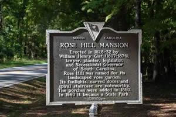

Union County Tourism Commission
Outdoor & Sporting Goods Company
The best homemade pickles, jellies, preserves and gift items
BBQ, food, catering, events, food
Food, catering, events, food
Our soil varies from brown loam to red clay to some pretty sticky mud places. We are in the Piedmont Region and have rolling hills, no mountains as such, however if you walk several of our hills you might slide the classification from hill to small mountain! We have field sections for super high speeds and engine cooling, the pastures are terraced and this gives you plenty of opportunity for minor air time. The course will go through young planted pine sections where you cannot see ten feet ahead, older pine forests with the chance to go fast, hardwood forests with slick leaves to contend with and mixed stands of pine and hardwoods where its single file racing. Down by the Tyger River we have all the mud one could desire! We try to include our trademark creek jump when weather conditions allow!! Throughout the course you will find smaller creeks, gullies, rocks, stumps (stump holes), briers, and the very devil himself--grape vines! Grape vines just off the course will take you off your ride instantly making you wish you had stayed on the marked section. Course length varies from four to twelve miles, once again depending on weather conditions and which classes will be using it. You will not be disappointed! The creek jump is not available to all classes.
 Restored 19th century Federal-style house of William H. Gist, Governor of S.C. in the 1860's. Rose Hill's mansion, period furnishings,gardens, historic trees and nature trail covering 44 acres on the Tyger River give the visitor a realistic look at plantation life in the days prior to the Civil War. In the 1860's S.C. had no Governors Mansion so Rose Hill became the Governors Mansion for his time in office. Listed on the National Register of Historic Places. Hours Th-M grounds 9am-6pm; house tours 1-4pm (closed Tue&Wed) Admission: grounds free, house tours $4 age 16+, $3 age 6-16, $2.50 S.C. senior, under 5 free.
Directions from Big Buck GNCC: left on hwy 49N towards Union,S.C.-to Cross Keys, S.C. right fork on Old Buncombe Rd.- left onto Sardis Rd.- you will pass the Gist Cemetery on the left and the park will be on the right. Address is 2577 Sardis Rd., Union,S.C. 29376 and telephone# is (864)427-5966. Address of Big Buck Racing is 170 Red Barn Road, Enoree,S.C. 29355 (for mapquest purposes) More info. is on www.discoversouthcarolina.com
 If you leave the racecourse and go towards Union you will see the house just to the right as you go through Cross Keys. There is a historical marker in front of the house. It is not open to the public.
If you leave the racecourse and go towards Union you will see the house just to the right as you go through Cross Keys. There is a historical marker in front of the house. It is not open to the public.
Includes a historical marker. Revolutionary War battle of Nov. 20,1780 which was fought adjoining the property you will be racing on! Lt. Col Thomas Sumter (The Gamecock) led the Patriot forces, under his command were Lt. Col. James McCall, Lt. Col. Henry Hamton, Lt. Col. Edward Lacey, and Lt. Col. William Hill; these commanding militia units from South Carolina and Georgia. The British forces were under the command of Lt. Col. Banastre Tarleton, who was notorious from The Waxhaws Fight on May 29, 1780 where patriot militiamen surrendered and were cut down with the sabre (Tarleton's quarter). Sumter's forces were preparing to ford the Tyger River when Ms Mary Dillard rode to tell him that Tarleton's column had earlier passed her house and contained calvary and infantry but no artillery. Sumter realized Tarleton would overtake his force before they could complete the fording and decided to take defensive positions at Blackstock's Plantation. Tarleton's command included his own Legion of Dragoons and a mounted infantry battalion of the 71st. Highlanders. Tarleton's troop, being mounted, had gone on ahead of the main British army, and thus had no artillery support. Tarleton had never been defeated in battle but that day he was stopped- not defeated- and his force withdrew to a nearby high hill. Sumter was badly wounded in the shoulder, chest, and back. Sumter's forces forded the Tyger River that night and thus left Tarleton in possession of the field. Sumter was not expected to live and his men carried him across the river wrapped in a cow hide. He did recover and fought other battles. This was the first time Tarleton had been stopped in a battle.
 Revolutionary War battle on August 18, 1780. This site includes facilities and is located on Hwy.56 going towards Clinton, S.C., on the left after you cross the Enoree River. Patriot forces included Lt. Col's. Isaac Shelby, Elijah Clarke, and James Williams who commanded militia from South Carolina and Georgia. Patriot losses ultimately were a dozen men killed or wounded while Loyalist losses were far greater, amounting to 150 men killed or wounded and 70 men captured. This battle took place two days after Gen. Horatio Gates was defeated at Camden.
Revolutionary War battle on August 18, 1780. This site includes facilities and is located on Hwy.56 going towards Clinton, S.C., on the left after you cross the Enoree River. Patriot forces included Lt. Col's. Isaac Shelby, Elijah Clarke, and James Williams who commanded militia from South Carolina and Georgia. Patriot losses ultimately were a dozen men killed or wounded while Loyalist losses were far greater, amounting to 150 men killed or wounded and 70 men captured. This battle took place two days after Gen. Horatio Gates was defeated at Camden.
 Revolutionary War battle on Jan. 17, 1781.
Located in Cowpens, S.C. which is north of Spartanburg, S.C. very close by I-85. This was when Lt. Col. Tarleton was defeated.
Revolutionary War battle on Jan. 17, 1781.
Located in Cowpens, S.C. which is north of Spartanburg, S.C. very close by I-85. This was when Lt. Col. Tarleton was defeated.
 Revolutionary War battle on Oct. 7, 1780. This site is located near I-85 at Kings Mountain, N.C.- that's south of Charlotte, N.C. Patriot forces included the "Tennessee Over-Mountain" men. Loyalist forces were commanded by Maj. Patrick Ferguson. Here's the fact you may not have known: this battle was won by the Patriots... Ferguson was the only actual British soldier present... the battle had been one between Americans!!!
Revolutionary War battle on Oct. 7, 1780. This site is located near I-85 at Kings Mountain, N.C.- that's south of Charlotte, N.C. Patriot forces included the "Tennessee Over-Mountain" men. Loyalist forces were commanded by Maj. Patrick Ferguson. Here's the fact you may not have known: this battle was won by the Patriots... Ferguson was the only actual British soldier present... the battle had been one between Americans!!!
 In 1973 I purchased the property and the family (Dad Henry Jr., myself, and son Hank) spent many memorable fall days together deer hunting. First one to come out of the woods usually built a campfire up and as the others gathered around later we always asked if anyone had seen the “Big Buck”.
In 1973 I purchased the property and the family (Dad Henry Jr., myself, and son Hank) spent many memorable fall days together deer hunting. First one to come out of the woods usually built a campfire up and as the others gathered around later we always asked if anyone had seen the “Big Buck”.
One day in 1981 I came home from work and Hank told me he wanted a racing go-kart. He was 10 years old then and before I knew it we were at Speedway Park for his first Saturday night kart race! Years 1982-1990 saw us all over the eastern U.S. with the WKA Horstman Gold Cup Series. During that time I witnessed the almost explosive growth of kart racing.
Fast forward to 1996 when Hank asked me to go with him while he raced in a Mid East Hare Scramble. I didn’t even know what a hare scramble was but when there I saw the opportunity to be a part of that type racing before it “outgrew” my being involved. So I left Mid East Hare Scramble Series Promoter Buren Hamrick a note on a scrap of paper offering to host a national event if the opportunity ever presented itself.
Later that year Buren called me in his role as GNCC Trail Designer for GNCC Boss Dave Coombs; a preview of the property led to his only question: “What do you want to name it”? Hank decided the time had come to share the “Big Buck” with GNCC riders from all over the world! (Note: No, we never shot the “Big Buck”, and I’ll bet no rider ever claims to have tamed the Big Buck GNCC.)
1997 saw the first Big Buck Grand National Cross Country held in Union County, SC and the 2015 VP Racing Fuels Big Buck GNCC is the nineteenth. In that time over 19,000 riders from all over the world have participated in the Big Buck GNCC events.
Kawasaki chose the Big Buck as the site to introduce their long awaited ATV (then called the V FORCE) to the public. Riders, writers, and Kawasaki officials left Union County, SC satisfied they had challenged some of the best trails in the world- the GNCC trails of the Big Buck.
Yamaha came to the Big Buck in 2009 to introduce their latest ATV, the YFZ450X, to the world. Again the riders, writers and Yamaha officials were impressed with the GNCC trails and terrain.
We invite you to join us at the VP Racing Fuels Big Buck GNCC!
Wide Open Wifi
Invite you to stay connected
at Big Buck Racing events
Welcome to WideOpen Wifi! We specialize in providing reliable Wi-Fi solutions to rural areas. We understand the challenges that rural communities face in accessing the internet and are dedicated to bringing connectivity to these under-served areas. With our advanced technology and knowledgeable team, we are able to deliver fast, reliable Wi-Fi to events and businesses in even the most remote locations. Thank you for choosing us as your internet service provider. We look forward to serving you and connecting you to the world.
* Please refer to the coverage area photo before deciding to purchase
Or scan for link to the website
Please refer to the coverage area per event on our site before deciding to purchase.
support@wideopenwifi.com
wideopenwifi.com